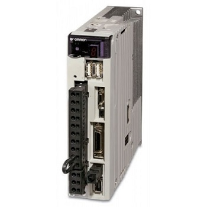

Контроллер серводвигателя (сервомотора)
Контроллер (сервоконтроллер) производит управление вращением серводвигателя. Сервоконтроллер (сервопривод) передает сигнал на серводвигатель. Сервопривод программируется под необходимые задачи данного оборудования.
Cервоусилители используются в работе серводвигателей ( сервомоторов ) и обеспечивают управление сервомоторами. Серводрайвер на компонентном уровне состоит из платы управления и силовой части (транзисторы IGBT).
Сервоконтроллер производит контроль мотора серво при помощи команд ввода/вывода. Сервопривод можно подключать к ноутбуку при помощи кабеля связи по протоколам RS232 или EtherCAT. Настройка (параметрирование) сервопривода производится с применением программатора. Некоторые сервоконтроллеры не требуют обязательного приобретения программатора. Для связи c ними используют обычный ноутбук. Во всех случаях должна быть установлена специальная программа.
Применяются сервоконтроллеры на промышленном или производственном оборудовании, а также на другом оборудовании.
В продаже существуют много разнообразных производителей Японские, Немецкие, Американские, Европейские, Китайские и другие страны производителей.
Наиболее известные производители сервоконтроллеров (сервоприводов), это:
- - Allen-bradley
- - Mitsubishi Electric
- - Indramat
- - Bosch Rexroth
- - Siemens
- - HEIDENHAIN
- - Fanuc
- - Mitsubishi
- - Yaskawa
- - Omron и другие.
Для работы с данными сервоконтроллером необходимо:
- ◈ кабель связи с данным сервоконтроллером;
- ◈ программное обеспечение для связи с вашим сервоконтроллером;
- ◈ программатор для связи с вашим сервоконтроллером.